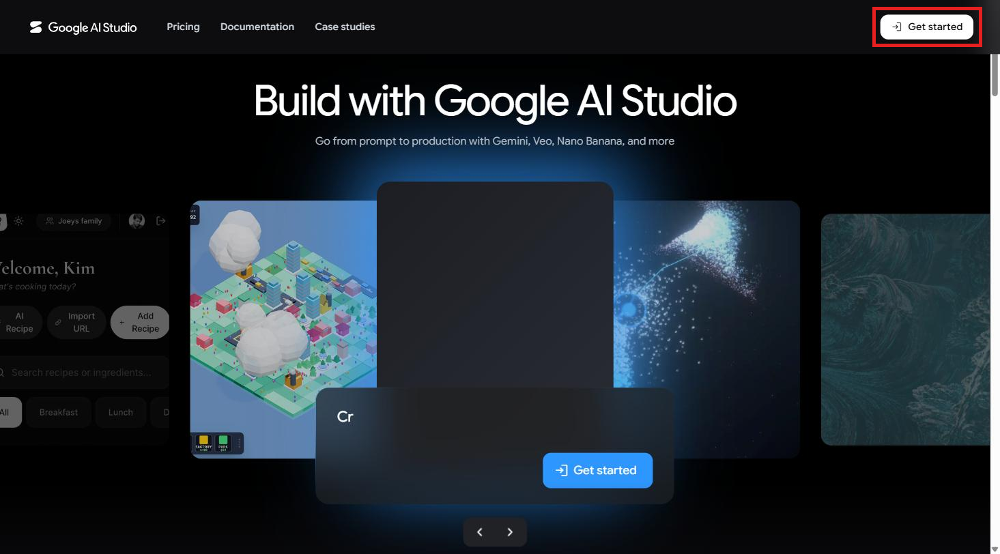
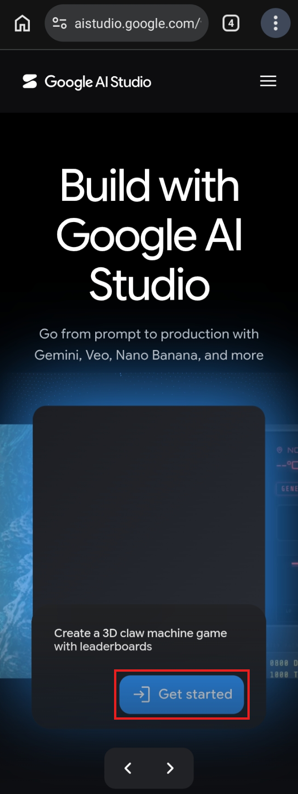
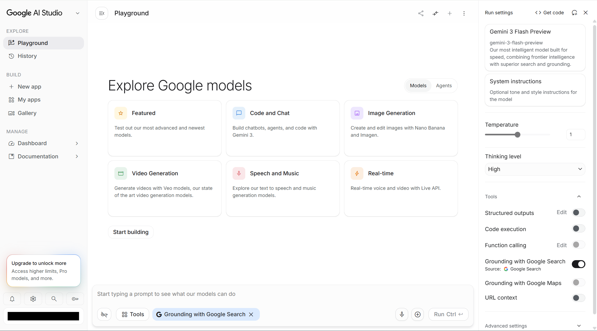
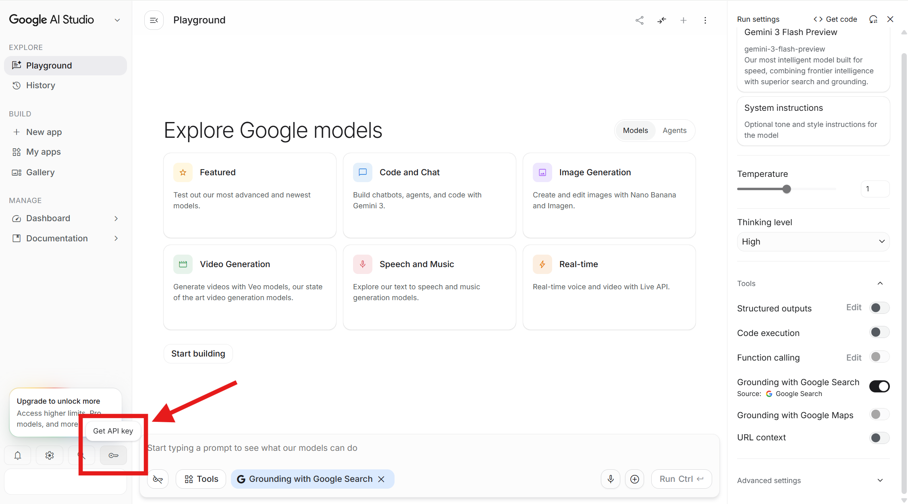
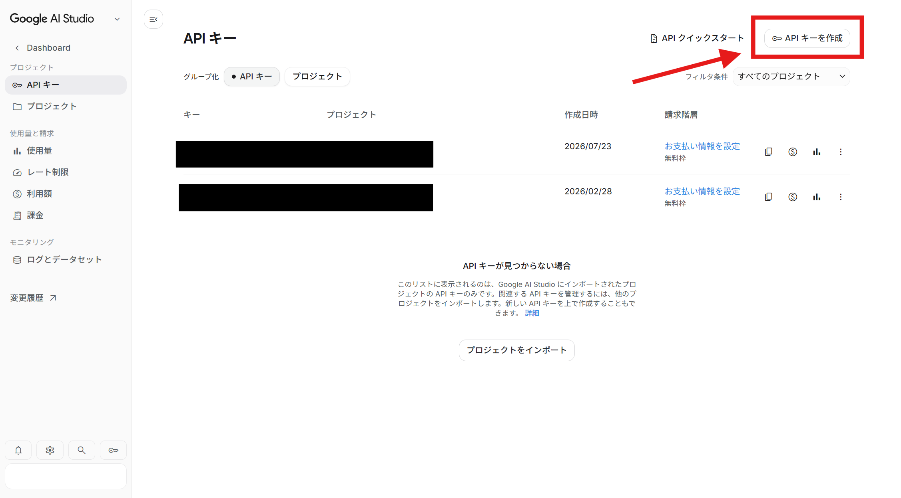
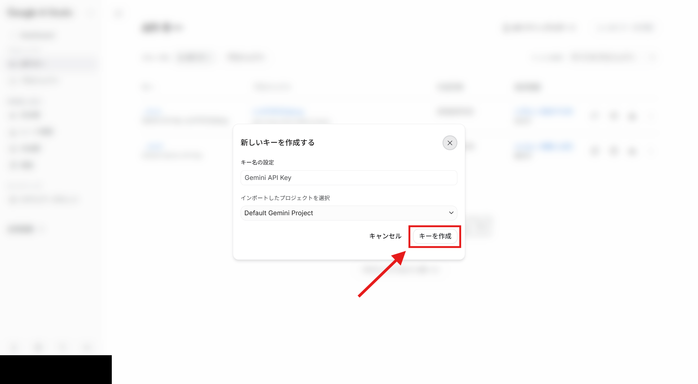
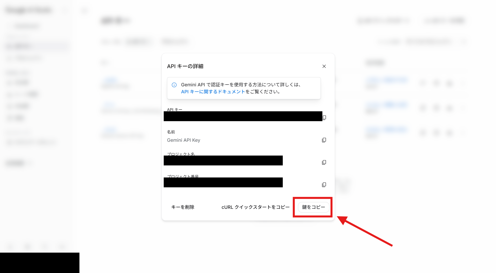
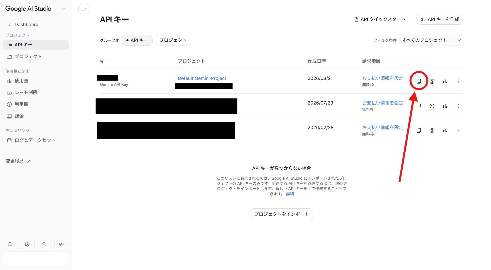
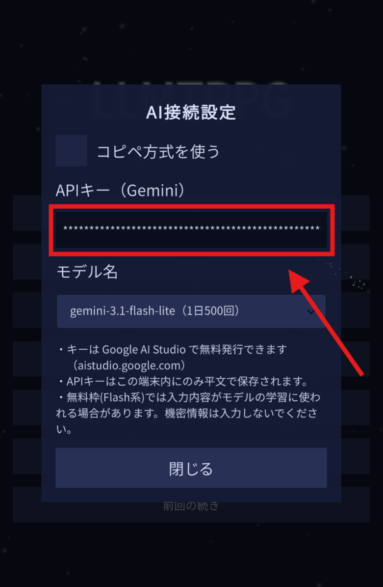
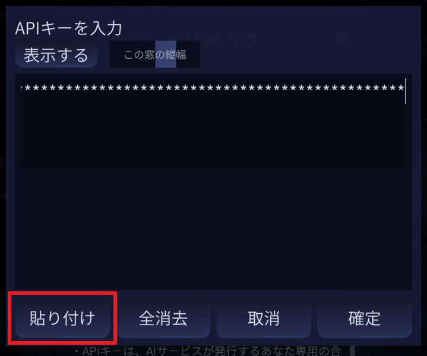

LLMTRPG
アプリの「API方式」を使うと、コピー＆貼り付けをせずに、ボタン1つで物語が進みます。
そのために必要な鍵（APIキー）は、Googleのサイトで無料で作れます。5分ほどで終わります。
1Google AI Studio を開く
ブラウザで aistudio.google.com を開きます。
初めて開くと、英語の紹介ページ（「Build with Google AI Studio」と大きく書かれた黒い画面）が出ます。 「Get started」を押してください。 PCでは右上、スマホでは画面の真ん中あたりの青いボタンです。


Googleアカウントでのログインを求められたら、ログインしてください。 ログイン済みの場合は、紹介ページを飛ばして次の画面が開くこともあります。

2「Get API key」を押す
画面の左下にある鍵のマークを押します。マウスを乗せると 「Get API key」と出ます。初めての場合は、利用規約への同意を求められることがあります。

3キーを作る
「API キー」の一覧が開きます。右上の 「API キーを作成」 を押してください。

小さな窓が開きます。名前もプロジェクトも、書かれているままで構いません。 そのまま 「キーを作成」 を押します。

4キーをコピーする
作成すると「API キーの詳細」が開きます。右下の 「鍵をコピー」 を押してください。

この窓を閉じてしまっても大丈夫です。一覧のコピーのマークからも、同じキーをコピーできます。

5アプリに貼り付ける
LLMTRPG を開き、タイトル画面の 「AI接続設定」 （または世界作成画面の「AI接続設定を変更」）を開きます。
「コピペ方式を使う」のチェックを外すと、APIキーの欄が現れます。その欄をタップしてください。

入力の窓が開くので、「貼り付け」を押し、続けて 「確定」 を押します。

モデル名の欄に一覧が読み込めれば成功です。あとは今までどおり遊ぶだけで、コピー＆貼り付けは要らなくなります。
Geminiの無料枠はモデルごとに1日の回数が決まっています。回数の多いモデルもあれば、1日20回ほどのモデルもあります。
アプリのモデル選択には、その目安が添えてあります（例:「gemini-3.1-flash-lite（1日500回）」）。たくさん遊ぶ日は、回数の多い「Flash Lite」系を選ぶと安心です。 回数を使い切っても、翌日には戻ります（その日はコピペ方式に切り替えて続けることもできます）。